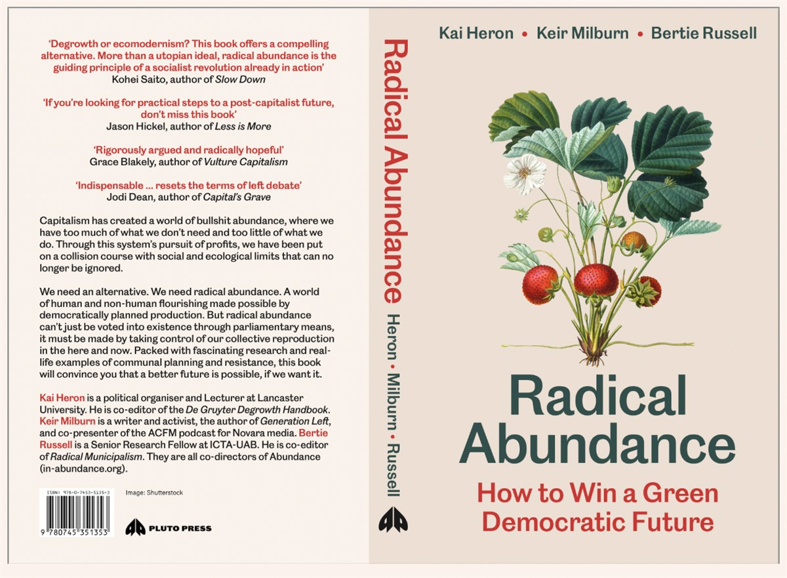

ON SOURCE: ABUNDANCE
Radical Abundance: How to Win a Green Democratic Futureis Abundance's 'theory of change'. Written by three of the organisation's co-directors, it outlines the key factors in developing a politics of transition that can be implemented in the here-and-now.
About the book
Capitalism has created a world of bullshit abundance, where we have too much of what we don't need and too little of what we truly do. This hollow pursuit, achieved at the expense of both people and the planet, has forced us to confront ecological limits we can no longer ignore.
Radical abundance is the antithesis of bullshit abundance. It is producing more of what we need and less of what we don't; more free time, more biodiversity, more services owned by those who use them. Understanding that we cannot wait for political change under liberal democracies, we have the chance to experiment with exciting communal ways of creating radical abundance now, before it is too late.
Packed with fascinating research and real-life examples showing how we can sustain over 8 billion lives without destroying our planet, reading Radical Abundance will convince you that a better future is possible, if we want it.
Endorsements
Degrowth or ecomodernism? This book offers a compelling alternative. More than a utopian ideal, radical abundance is the guiding principle of a socialist revolution already in action'
- Kohei Saito, author of Slow Down: How Degrowth Communism Can Save the Earth
'The crises we face—mass deprivation and ecological breakdown—cannot be resolved within capitalism. We need a pathway out. Radical Abundance delivers exactly that. If you're looking for practical steps to a post-capitalist future, don't miss this book'
- Jason Hickel, author of Less is More: How Degrowth Will Save the World
'Radical Abundance resets the terms of left debate. With its concrete, compelling, and creative embrace of class struggle as a politics of transition, it is indispensable to anyone committed to building popular power on a rapidly heating planet'
- Jodi Dean, author of Capital's Grave: Neofeudalism and the New Class Struggle
'A rigorously argued and radically hopeful book, which exposes the gross inefficiency of modern capitalism and shows precisely how we can begin to build societies that guarantee a good life for all'
- Grace Blakeley, author of Vulture Capitalism: How to Survive in an Age of Corporate Greed
Pre-Order it now
Pre-order the book direct from Pluto.
ON SOURCE: ABUNDANCE
